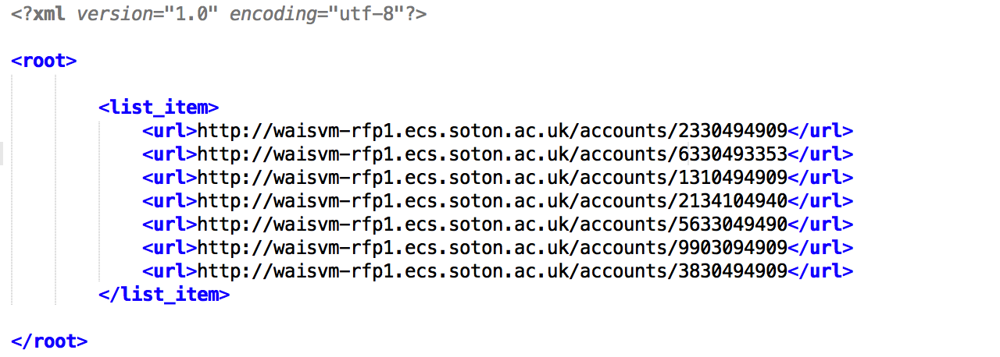
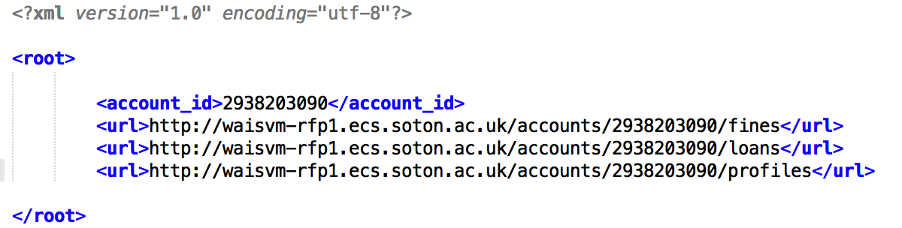
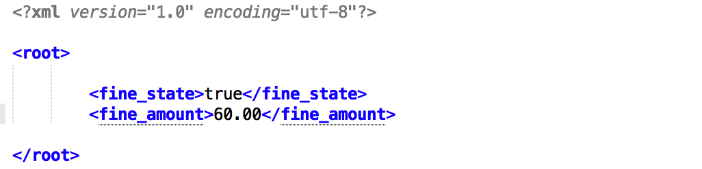
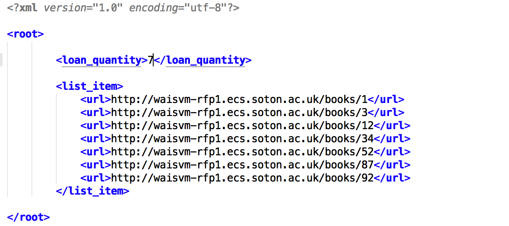
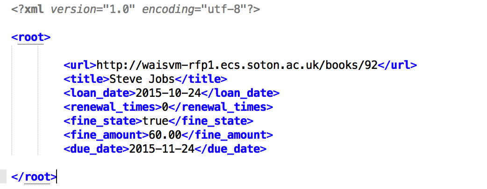
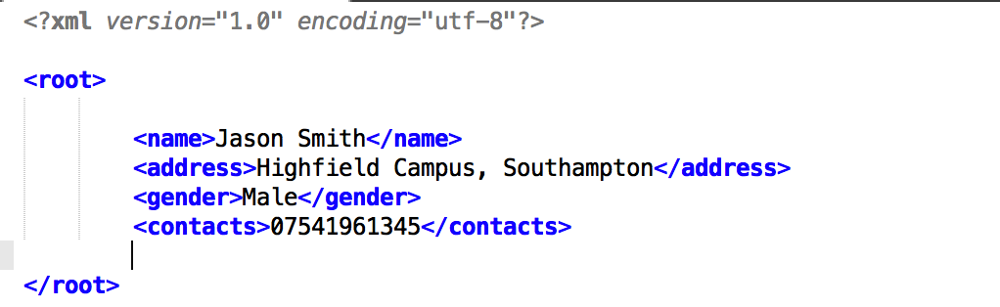

Overview
In order to allow users to loan books in the library system, some endpoints and tags are addded in this existing system.
And the state diagram of the loan system below illustrates how the request processed by the loan system when the user sends a loan request.

First of all, the loan system has to ensure the book users want to loan is available, so the system checks the value of the tag {availability}. If the valuse is true, then process to next step, or give the user a response: request rejected.
When the book is available, the system verify the user's account id, if user's account id is not valid, the system redirects to a webpage for registeration.
If the user has a valid account, the loan system needs to check the value of the tag {loans quantity}. If the user has less than 10 active loans, the request moves to next procedure, or the loan system redirects to the webpage for returning books.
If the value of tag {fine state} is true, it means that the user owes a fine and he needs to pay the fine before loaning a book. If the user does not owe a fine, he is qualified to loan books.
Finally, the system needs to add some loan detail to book and user's account, then give a response: book loaned to the user. In other words, some values of tags (e.g. avaliablity, loan date, due date) are changed when the user loans a book.
1.http://waisvm-rfp1.ecs.soton.ac.uk/accounts
Aim
This endpoint is designed for users to manage their accounts.
Http verbs
GET, POST, HEAD, OPTIONS can be used in this endpoint.
Meanings of http verbs
When using OPTIONS, it returns all http verbs that can be used in this endpoint.
By using POST, a new account can be created in this library system. And if we only want to get a header of the response instead of body, we can use HEAD.
When using http verb GET, it returns a collection of accounts in the library system. All accounts are listed in the tags {list-item}{/list-item}, and we can know the abstract of each account.
Parameters
| url | Returns a collection of URLs of accounts. The type of this value is field. This value is required when adding a new account in this loan system.
Example Values: http://waisvm-rfp1.ecs.soton.ac.uk/accounts/3830494909 |
Example
2.http://waisvm-rfp1.ecs.soton.ac.uk/accounts/{account-id}
Aim
This endpoint is designed for users to store information about their profiles and loans.
Http verbs
GET, PUT, PATCH, DELETE, HEAD, OPTIONS can be used on this resource.
Meanings of http verbs
When using OPTIONS, it returns all http verbs that can be used in this endpoint.
By using PUT and PATCH, users can update information of the account in this library system.
Besides, DELETE can help to delete the account or some specific information in the account. And if we only want to get a header of the response instead of body, we can use HEAD.
When using http verb GET, it returns all information about the specific account that we requested.
Parameters
| account_id | Returns the account id of this account. This value is required when creating a new account and its type is integer.
Example Values:2938203090 |
| fines | Returns the URL of fines. This value is required and not only readable when creating a new account.
Example Values: http://waisvm-rfp1.ecs.soton.ac.uk/accounts/ {account-id}/fines |
| loans | Returns the URL of loans. This value is required and not only readable when creating a new account.
Example Values: http://waisvm-rfp1.ecs.soton.ac.uk/accounts/ {account-id}/loans |
| profiles | Returns the URL of profiles. This value is required and not only readable when creating a new account.
Example Values: http://waisvm-rfp1.ecs.soton.ac.uk/accounts/ {account-id}/profiles |
Example
3.http://waisvm-rfp1.ecs.soton.ac.uk/accounts/{account-id}/fines
Aim
This endpoint is designed for managing the state of fines for users.
Http verbs
GET, PUT, PATCH, DELETE, HEAD, OPTIONS can be used on this resource.
Meanings of http verbs
When using OPTIONS, it returns all http verbs that can be used in this endpoint.
By using PUT and PATCH, users can update status of fines for the specific account in this library system.
Besides, DELETE can help to delete specific information in the fine endpoint. And if we just want to get a header of the response instead of body, we can use HEAD.
When using http verb GET, it returns all information about the fine endpoint.
Parameters
| fine state | Returns fine state of the specific account that we requested. The type of fine state is Boolean and its value is true or false. True represents that this user owes a fine. On the contrary, false means that the user does not have a fine. This value is required and not only readable.
Example Values: true |
| fine amount | Returns the fine amount of the specific account. The type of this value is float. And the value is required and not only readable. If the user does not owe a fine, the value is 0.00.
Example Values: 60.00 |
Example
4.http://waisvm-rfp1.ecs.soton.ac.uk/accounts/{account-id}/loans
Aim
This endpoint is designed for users to manage their loans, i.e. obtain basic information about loans.
Http verbs
GET, POST, HEAD, OPTIONS can be used in this endpoint.
Meanings of http verbs
When using OPTIONS, it returns all http verbs that can be used in this endpoint.
By using POST, a new loan can be added in this account. And if we only want to get a header of the response instead of body, we can use HEAD.
When using http verb GET, it returns a collection of loans in the account. All loans are listed in the tags {list-item}{/list-item}, and we can know the abstract of each loan.
Paramters
| loan quantity | Returns loans quantity of the specific account that we requested. The type of loan quantity is integer. This value is required and not only readable.
Example Values: 5 |
| url | Returns a collection of URLs of loans. The type of this value is field. This value is required when adding a new loan in this accout.
Example Values: http://waisvm-rfp1.ecs.soton.ac.uk/books/92 |
Example
5.http://waisvm-rfp1.ecs.soton.ac.uk/accounts/{account-id}/loans/{book-id}
Aim
This endpoint is designed for users to check the status of each loan.
Http verbs
GET, PUT, PATCH, DELETE, HEAD, OPTIONS can be used on this resource.
Meanings of http verbs
When using OPTIONS, it returns all http verbs that can be used in this endpoint.
By using PUT and PATCH, users or library staff can update information of the loans in this account.
Besides, DELETE can help to delete the loans or some specific information about loans. And if we only want to get a header of the response instead of body, we can use HEAD.
When using http verb GET, it returns all information about the specific loan that we requested.
Parameters
| url | Returns the URL of the specific loan, and the book id of the specific loan is same to that in the library system. When the user loan a new book, the URL is required and only readable.
Example Values:http://waisvm-rfp1.ecs.soton.ac.uk/books/92 |
| title | Returns the name of the loan that we requested. The type of title is string and its max length is 255. This value is required and only readable when a new book is loaned.
Example Values: Steve Jobs |
| loan date | Returns the loan date of the loan that we requested. The type of loan date is date. This value is required and not only readable when a new book is loaned.
Example Values: 2015-10-24 |
| renewal times | Returns the renewal times of the specific loan. In other words, it indicates that how many times the user renewal this loan. The type of renewal times is integer and its value ranges from 0 to 1. This value is required and not only readable when a new loan is created.
Example Values: 0 |
| fine state | Returns fine state of the specific book that we requested. The type of fine state is Boolean and its value is true or false. True represents that this user should pay a fine for this book. On the contrary, false means that the user does not have a fine. This value is required and not only readable.
Example Values: true |
| fine amount | Returns the fine amount of the specific loan. The type of this value is float. And the value is required and not only readable when loan a new book. If the loan is new or has no fine, the value is 0.00.
Example Values: 60.00 |
| due date | Returns the due date of the loan that we requested. The type of due date is date. This value is required and not only readable when a new book is loaned.
Example Values: 2015-11-24 |
Example
6.http://waisvm-rfp1.ecs.soton.ac.uk/accounts/{account-id}/profiles
Aim
This endpoint is designed for users to store their profiles.
Http verbs
GET, PUT, PATCH, DELETE, HEAD, OPTIONS can be used on this resource.
Meanings of http verbs
When using OPTIONS, it returns all http verbs that can be used in this endpoint.
By using PUT and PATCH, users can update their profiles for the specific account in this library system.
DELETE can help to delete specific information in the profiles endpoint. And if we only want to get a header of the response instead of body, we can use HEAD.
When using http verb GET, it returns all information about the profiles endpoint.
Parameters
| name | Returns the name of the specific user who has this account. The type of name is string. This value is required and not only readable when the user creates a new account.
Example Values: Jason Smith |
| address | Returns the address of the specific user. The type of address is string. This value is not required and not only readable when the user creates a new account.
Example Values: Highfield Campus, Southampton |
| gender | Returns the gender of the specific user. The type of this value is Male or Female. And the value is required and not only readable.
Example Values:Male |
| contacts | Returns the contacts of the specific user. The type of it is string and its max length is 11. This value is not required and not only readable when the user creates a new account.
Example Values:07541961345 |
Example
7.http://waisvm-rfp1.ecs.soton.ac.uk/books/ {book-id}
Aim
In the existing library system, the ~/books/ {book-id} endpoint already has some basic information of each book, but this endpoint is extended and has more parameters or tags. In other word, some new parameters or tags are added in each book in order to achieve loan function.
Http verbs
GET, PUT, PATCH, DELETE, HEAD, OPTIONS can be used on this resource.
Meanings of http verbs
When using OPTIONS, it returns all http verbs that can be used in this endpoint.
By using PUT and PATCH, we can update information of the profiles we have posted in this library system.
Besides, DELETE can help to delete some specific information we posted. And if we just want to get a header of the response instead of body, we can use HEAD.
When using http verb GET, it returns all information about the specific book that we requested.
Parameters
| availability | Specifies the loan state of the specific book in the library system. The value of availability is Boolean. When the user loans the specific book, this value changes from true to false (True means this book is available, while false means it is not available). This value is required and not only readable.
Example Values: true |
| account-id | Returns the account id of the user who loans the book. The type of account id is string. This value is required and not only readable.
Example Values: Jason Wu |
| loan date | Returns the loan date of the book. The type of this value is date. This value is required and not only readable.
Example Values: 2015-10-24 |
| due date | Returns the due date of the book. The type of this value is date. This value is required and not only readable.
Example Values: 2015-11-24 |